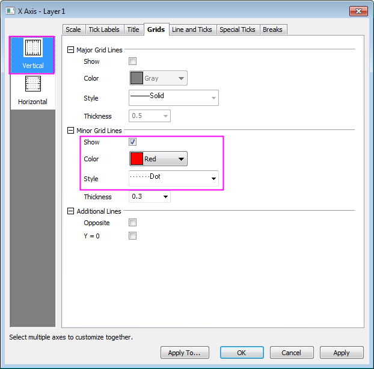

I-förmiges Boxdiagramm
i-shaped-Box
Zusammenfassung
Origins Boxdiagramm ist vielseitig anpassbar. Dieses Tutorial zeigt, wie ein I-förmiges Boxdiagramm mit sich überschneidenden Datenpunkten und benutzerdefinierten Perzentilen erstellt wird.
Origin-Version mind. erforderlich: 2015 SR0
Was Sie lernen werden
- Einstellungen eines Boxdiagramms benutzerdefiniert anpassen,
- Dialog Achsen für Boxdiagramme benutzerdefiniert anpassen
- Ein Linienobjekt zu einem Boxdiagramm hinzufügen
I-förmiges Boxdiagramm mit Datenpunkt erstellen
Dieses Tutorial basiert auf dem Projekt: <Origin-Verzeichnis>\Samples\Tutorial Data.opj.
- Öffnen Sie das Projekt Tutorial Data.opj und navigieren Sie zu dem Ordner I-Shaped Box.
- Aktivieren Sie die Arbeitsmappe Book1, Sheet1. Markieren Sie die Spalten A bis K und wählen Sie dann Zeichnen: Statistisch: Boxdiagramm. Markieren und löschen Sie als Nächstes das Legendenobjekt aus dem Diagramm.
- Klicken Sie doppelt auf eine der Boxen, um den Dialog Details Zeichnung zu öffnen. Wechseln Sie zur Registerkarte Boxdiagramm und setzen Sie Typ auf Box + Datenüberschneidung, den Stil auf I-förmige Box und den Whiskerbereich auf Min-Max. Aktivieren Sie das Kontrollkästchen Ausreißer.
- Wechseln Sie zur Registerkarte Daten und setzen Sie Datenbreite (%) auf 0.
- Klicken Sie auf OK, um diese Einstellungen anzuwenden.
Weitere Anpassungen des Boxstils
- Klicken Sie doppelt auf eine der Boxen, um den Dialog Details Zeichnung zu öffnen. Wechseln Sie zur Registerkarte Gruppe und ändern Sie das Inkrement der Farbe Rand auf Kein:
- Gehen Sie zur Registerkarte Symbole, setzen Sie Form auf 1 Quadrat sowie Innen auf Offen und legen Sie dann sowohl Randfarbe als auch Füllfarbe mit 15 Orange fest. Deaktivieren Sie das Kontrollkästchen Linientransparenz folgen und setzen Sie die Transparenz auf 80%.
- Wechseln Sie zur Registerkarte Muster und setzen Sie die Randfarbe auf Violett und die Breite auf 1,5.
- Wechseln Sie zur Registerkarte Abstände und setzen Sie die Option Lücke zwischen Boxen (in %) auf 0.
- Gehen Sie zur Registerkarte Perzentile und duplizieren Sie die Einstellungen, die unten für Typ gezeigt werden, und aktivieren Sie Benutzerdefinierte Perzentile bei <P, 100-P>.
- Gehen Sie zur Registerkarte Linien und duplizieren Sie die Einstellungen, wie unten gezeigt.
- Klicken Sie auf OK, um diese Einstellungen anzuwenden.
Weitere Anpassungen der Achsen
- Klicken Sie doppelt auf die X-Achse, um den Dialog Achsen zu öffnen. Gehen Sie zur Registerkarte Skalierung und setzen Sie die Anzahl der kleinen Hilfsstriche auf 1.
- Gehen Sie zur Registerkarte Format auf der Seite Beschriftung der Hilfsstriche. Halten Sie die Strg-Taste gedrückt, um die Symbole Unten und Links gleichzeitig auszuwählen, und setzen Sie die Farbe der Beschriftung auf Schwarz.
- Gehen Sie zur Registerkarte Gitternetze und wählen Sie das Symbol Vertikal im linken Bedienfeld aus. Duplizieren Sie die Einstellungen der Nebengitternetzlinien, wie unten gezeigt.
- 
- Gehen Sie zur Registerkarte Linie und Hilfsstriche, klicken Sie auf das Symbol Oben im linken Bedienfeld und aktivieren Sie Linie und Hilfsstriche zeigen, um die obere Achse zu zeigen.
- Halten Sie die Strg-Taste gedrückt, um die Symbole Unten und Oben im linken Bedienfeld gleichzeitig auszuwählen, duplizieren Sie die Einstellungen, wie unten gezeigt, und klicken Sie auf Anwenden, um Ihre Änderungen zu sehen.
- Um die Y-Achse benutzerdefiniert anzupassen, gehen Sie zur Registerkarte Skalierung, wählen Sie das Symbol Vertikal im linken Bedienfeld aus und duplizieren Sie die unten gezeigten Einstellungen.
- Wechseln Sie zur Registerkarte Titel und geben Sie den Text Temperature (\+(o)F) in das Textfeld ein.
- Gehen Sie zur Registerkarte Gitternetze und aktivieren Sie das Kontrollkästchen Gegenüber im Zweig Zusätzliche Linien.
- Wechseln Sie zur Registerkarte Linie und Hilfsstriche und setzen Sie die Farbe im Zweig Linie auf Grau.
- Klicken Sie auf OK, um diese Einstellungen anzuwenden.

Zum Markieren des Mittelwerts eine Linie hinzufügen
- Markieren Sie alle Spalten in Book1. Der globale Mittelwert wird automatisch berechnet und auf dem Statusbalken angezeigt.
- Aktivieren Sie das Diagrammfenster und wählen Sie im Menü Einfügen: Gerade hinzufügen. Übernehmen Sie die Einstellungen im Dialog addline, wie unten gezeigt.
- Klicken Sie mit der rechten Maustaste auf einen leeren Teil des Diagramms und wählen Sie Layertitel hinzufügen/modifizieren. Geben Sie Weather History for Boston, Fall (Sep, Oct, Nov) ein.
- Ziehen Sie an den Titeln von Achse und Layer, bis sie die gewünschte Position haben.